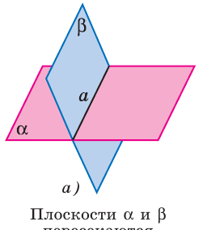
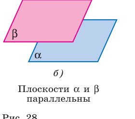
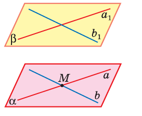
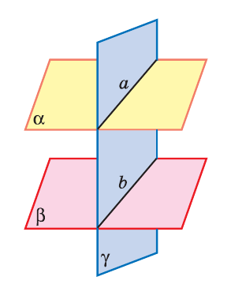
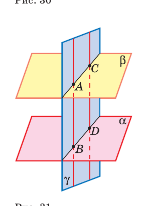

Теория
Два случая — и всё
По аксиоме А3, если у двух плоскостей есть общая точка, то у них есть целая общая прямая. Значит, вариантов ровно два: плоскости пересекаются по прямой — или не имеют общих точек вообще. Третьего не дано.


Две плоскости называются параллельными, если они не пересекаются. Обозначение: α ∥ β.
Модели вокруг: пол и потолок, две противоположные стены, столешница и пол. Но как убедиться, что пол и потолок, если их мысленно продолжить бесконечно, нигде далеко не пересекутся?
Признак параллельности плоскостей
Проверить определение напрямую невозможно: плоскости бесконечны, «посмотреть везде» нельзя. Нужен критерий, который проверяется локально.
Если две пересекающиеся прямые одной плоскости соответственно параллельны двум прямым другой плоскости, то эти плоскости параллельны.

Пусть в плоскости α прямые a и b пересекаются в точке M, а в плоскости β лежат a₁ ∥ a и b₁ ∥ b.
Шаг 1. По признаку параллельности прямой и плоскости (урок 2): a ∥ β и b ∥ β.
Шаг 2 (от противного). Пусть α и β не параллельны — тогда они пересекаются по прямой c.
Плоскость α проходит через прямую a, параллельную β, и пересекает β по прямой c. По свойству 1° из урока 2 получаем a ∥ c. Точно так же b ∥ c.
Выходит, через одну точку M проходят две разные прямые a и b, параллельные одной и той же прямой c. Это запрещает теорема о параллельных прямых. Противоречие, значит, α ∥ β. ∎
Слово «пересекающиеся» — сердце теоремы. Если взять в α две параллельные прямые, вывода не будет. Пример — раскрытая книга: на каждой странице можно провести прямые, параллельные корешку, и прямые на левой странице будут параллельны прямым на правой. А сами страницы пересекаются — по корешку.
Поэтому в доказательстве так важно, что a и b проходят через одну точку M: именно это даёт противоречие с теоремой о параллельных прямых.
Треугольники ABC и A₁B₁C₁ лежат в разных плоскостях, а отрезки AA₁, BB₁, CC₁ параллельны и равны. Докажи, что плоскости ABC и A₁B₁C₁ параллельны.
1) AA₁ ∥ BB₁, значит, эти отрезки лежат в одной плоскости, и AA₁B₁B — четырёхугольник с парой параллельных и равных противоположных сторон, то есть параллелограмм. Отсюда AB ∥ A₁B₁.
2) Точно так же AA₁C₁C — параллелограмм, и AC ∥ A₁C₁.
3) Прямые AB и AC плоскости ABC пересекаются в точке A и соответственно параллельны прямым A₁B₁ и A₁C₁ второй плоскости. По признаку плоскости параллельны. ∎
Два свойства параллельных плоскостей
Если две параллельные плоскости пересечены третьей, то линии их пересечения параллельны.

Прямые a и b лежат в одной плоскости γ. Пересечься они не могут: общая точка принадлежала бы и α, и β, а эти плоскости параллельны. Лежат в одной плоскости и не пересекаются ⟹ параллельны. ∎
Наглядно: стена пересекает пол и потолок — линии стыка параллельны.
Отрезки параллельных прямых, заключённые между параллельными плоскостями, равны.

Пусть точки A и C лежат в плоскости β, а B и D — в плоскости α (как на рис. 31). Проведём плоскость γ через параллельные прямые AB и CD. Она пересекает β по прямой AC, а α — по прямой BD; по свойству 1° эти прямые параллельны. В четырёхугольнике ABDC обе пары противоположных сторон параллельны ⟹ это параллелограмм ⟹ AB = CD. ∎
Задачи урока
Сначала устно, потом письменно. Решай с обоснованием: на каждый шаг — ссылка на аксиому, теорему или признак.
Тест к уроку
Домашнее задание
Задачи Д1–Д6 ниже, каждое утверждение — со ссылкой на признак или свойства параллельных плоскостей. Выучить признак параллельности плоскостей и объяснить, почему в нём нельзя заменить пересекающиеся прямые на параллельные; выучить оба свойства параллельных плоскостей.